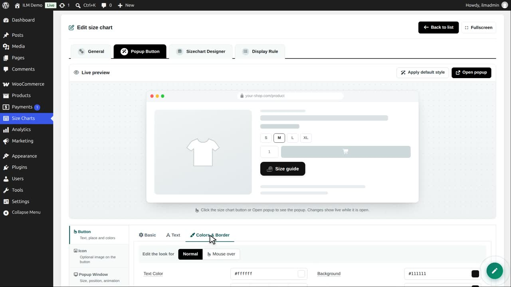
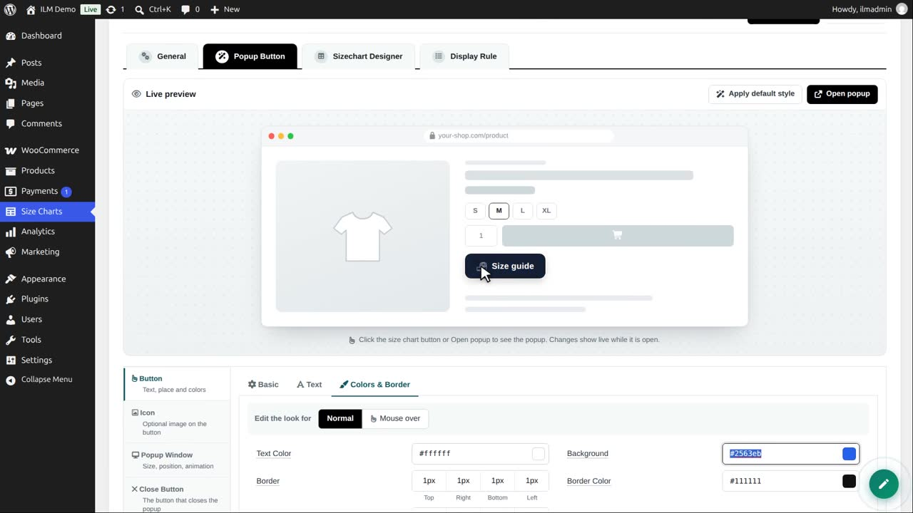
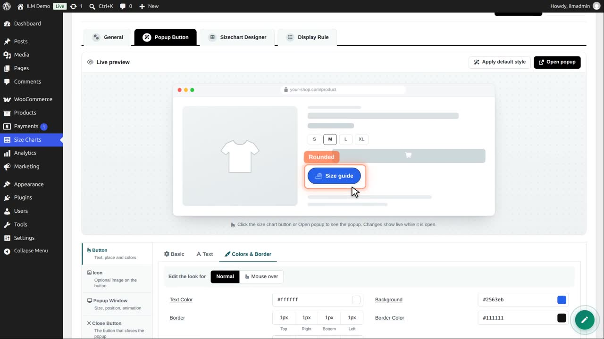
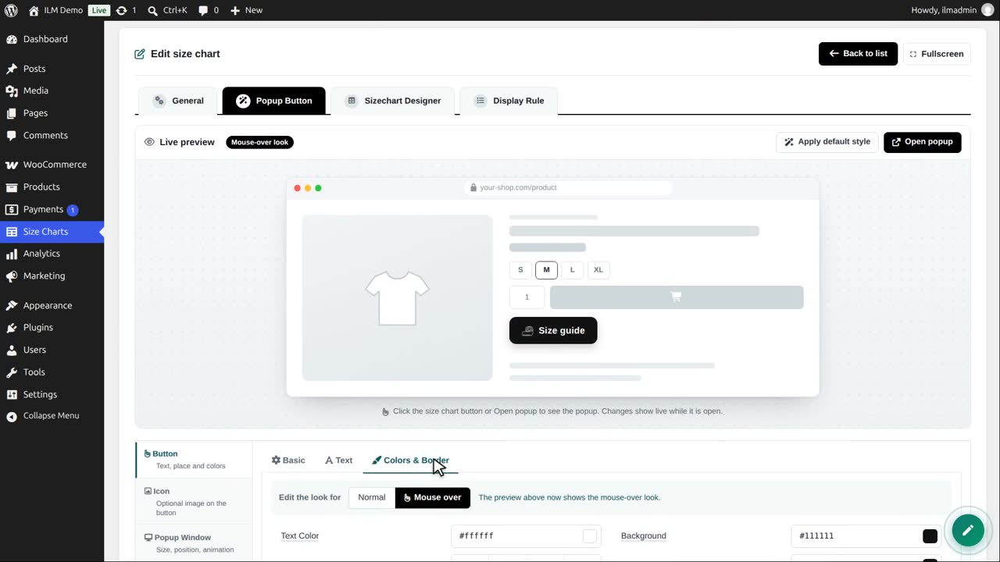
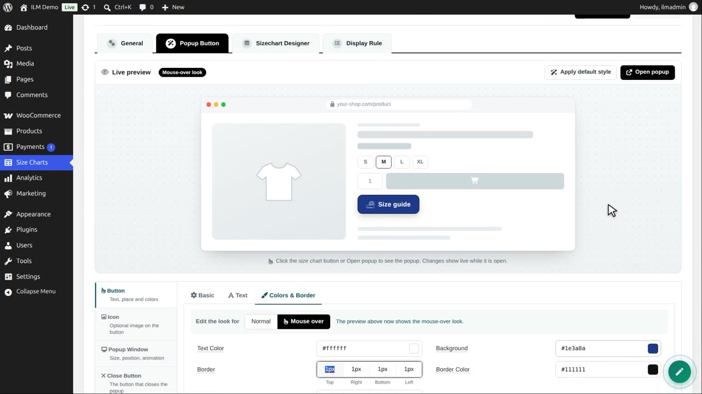
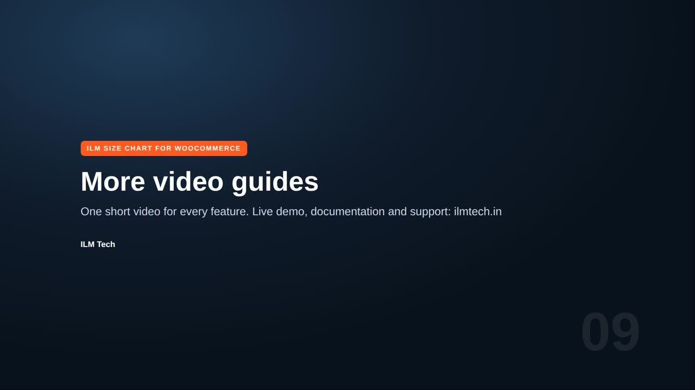

Edit the chart, open Popup Button, then Colors and Border. First choose which look you edit: Normal, or Mouse over.

In Normal, set the background colour. Type it or click the swatch to pick one. We use blue, with white text.

Border radius rounds the corners. 24 pixels on every corner gives a pill shape. The border width and colour are next to it.

Now click Mouse over. The preview shows the mouse-over look while you edit it.

We make the background darker on mouse over. Transition duration sets how smoothly it changes.

Save. In the shop, the button is blue and rounded, and it turns darker when the mouse is over it.
